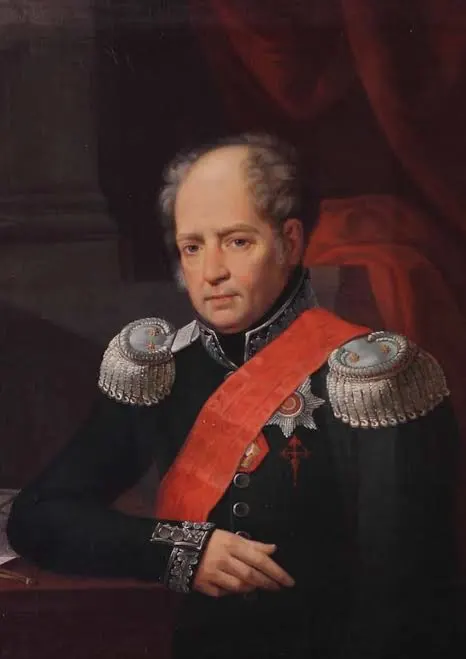
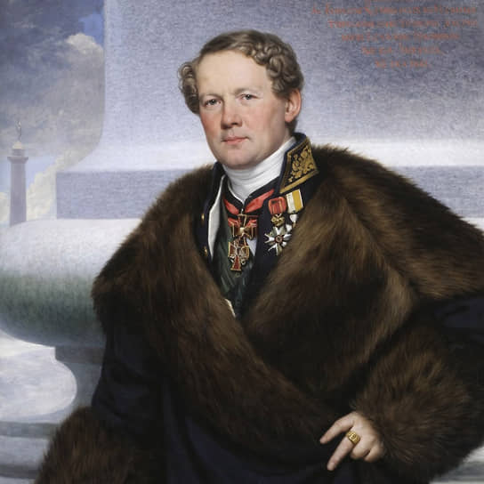

АБИнженер, учёный, организатор. Первый ректор Института Корпуса инженеров путей сообщения. Глава Комитета строений и гидравлических работ.
Создатель механизмов для подъёма колонн Исаакиевского собора, проектировщик Московского Манежа и чугунных мостов Петербурга.

ОМАрхитектор, «императорский зодчий». Создатель Исаакиевского собора и Александровской колонны — двух главных символов Петербурга.
Рекомендован Бетанкуром Александру I. Руководил строительством собора 40 лет, воплотив инженерные решения наставника.